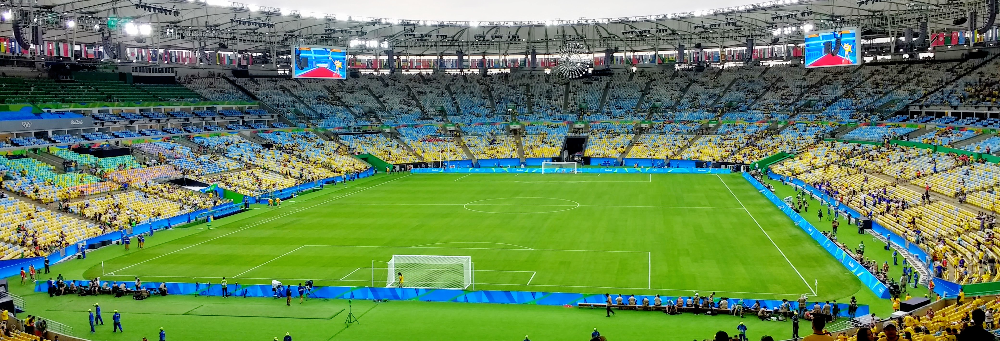

Equipes protagonizam um dos confrontos mais importantes da edição deste ano da Copa Sul-Americana. Nesta terça-feira, 20 de outubro, às 21h30 (horário de Brasília), as equipes se enfrentam no Maracanã, no Rio de Janeiro, pela partida de volta das semifinais da competição continental, com transmissão do SBT e Paramount+.
O Cruzmaltino chega à decisão com vantagem depois de vencer o jogo de ida por 1 a 0, na Bombonera, em Buenos Aires. O resultado permite ao time brasileiro avançar à final com um empate, enquanto os argentinos precisam vencer para continuar sonhando com o título.
Além da disputa esportiva, o confronto carrega um peso histórico especial. O Vasco tenta voltar a uma final continental depois de 26 anos e alcançar uma decisão inédita de Copa Sul-Americana. O Boca Juniors, por sua vez, busca ampliar sua extensa tradição em competições internacionais.
Com os ingressos esgotados e um Maracanã preparado para receber uma grande festa vascaína, a semifinal representa mais do que uma vaga na decisão: é uma oportunidade de recolocar o Vasco entre os protagonistas do futebol sul-americano.
O primeiro jogo
A vantagem vascaína começou a ser construída na Argentina, em uma partida marcada pela capacidade do time brasileiro de enfrentar a pressão da Bombonera.
No primeiro encontro da semifinal, o Vasco venceu por 1 a 0, com gol de Madson, de cabeça, após cruzamento de Andrés Gómez. A equipe comandada pelo português Pedro Emanuel conseguiu criar oportunidades ofensivas e abriu o placar ainda no primeiro tempo.
O cenário ficou mais complicado na segunda etapa. O Boca Juniors aumentou a pressão, acertou a trave em duas oportunidades e passou a controlar mais ações ofensivas, especialmente depois da expulsão de Andrés Gómez, aos 63 minutos.
Com um jogador a menos, o Vasco precisou reorganizar seu sistema defensivo. O goleiro Léo Jardim e os demais integrantes da defesa tiveram participação importante para impedir o empate argentino.
A vitória encerrou uma sequência de 17 jogos de invencibilidade do Boca Juniors na Bombonera e marcou o primeiro triunfo vascaíno sobre o adversário em partidas oficiais.
Mais importante do que o resultado isolado, o desempenho mostrou a capacidade do Vasco de competir em um ambiente tradicionalmente difícil para visitantes. A equipe conseguiu transformar uma atuação de resistência em vantagem concreta para a segunda partida.
Cenários para chegar à final da Sul-Americana
O placar do primeiro jogo estabelece um panorama claro para a definição da semifinal.
- Vitória do Vasco por qualquer placar: classificação brasileira.
- Empate por qualquer placar: Vasco classificado.
- Vitória do Boca Juniors por um gol de diferença: decisão nos pênaltis.
- Vitória do Boca Juniors por dois ou mais gols de diferença: classificação argentina.
Como não existe critério de gol qualificado fora de casa, o que importa é o placar agregado das duas partidas.
A vantagem de um gol coloca o Vasco em situação favorável, mas não elimina os riscos de uma semifinal contra um adversário acostumado a disputar competições eliminatórias.
Um dos desafios da equipe será administrar o resultado sem abandonar sua capacidade ofensiva. Conceder espaço excessivo ao Boca pode transformar a vantagem conquistada em Buenos Aires em uma situação de pressão constante.
Estádio se transforma em personagem da semifinal
A confirmação do Maracanã como palco da partida foi cercada por um longo impasse nos bastidores. Antes de garantir o estádio para a semifinal da Copa Sul-Americana, o Cruzmaltino precisou superar restrições regulamentares, resistência do consórcio administrador e uma sequência de decisões judiciais que chegaram a colocar em dúvida a realização da partida no Rio de Janeiro.
A primeira opção do Vasco era São Januário, sua casa tradicional. Entretanto, o estádio não atende à exigência da Conmebol de capacidade mínima de 30 mil espectadores para essa fase da competição. O clube tentou obter uma autorização excepcional e apresentou alternativas de segurança, mas não conseguiu reunir todas as aprovações necessárias, incluindo o aval dos órgãos de segurança pública.
Sem a possibilidade de atuar em São Januário, o Vasco passou a buscar o Maracanã. O problema foi a resistência do consórcio Fla-Flu, administrado por Flamengo e Fluminense, que apresentou argumentos relacionados às condições do gramado e à utilização do complexo esportivo. A existência de uma partida de basquete entre Flamengo e Botafogo, prevista para o mesmo dia no Maracanãzinho, também entrou na discussão por questões de segurança e logística.
Em 15 de outubro, o Superior Tribunal de Justiça rejeitou um pedido do consórcio para suspender a autorização. Posteriormente, em 19 de outubro, o Tribunal de Justiça do Rio de Janeiro confirmou por unanimidade a realização do confronto no Maracanã, encerrando a incerteza sobre o mando de campo.
O impasse chegou a provocar preocupação na Conmebol, que considerou a possibilidade de transferir o jogo para Assunção, no Paraguai, caso a instabilidade jurídica persistisse.
A expectativa de público também ajuda a dimensionar a importância da partida. Os ingressos disponibilizados foram esgotados, com estimativa de aproximadamente 60 mil a 65 mil torcedores no Maracanã. O número definitivo de espectadores dependerá da contabilização oficial no dia do jogo.
A disputa fora de campo acrescentou um componente simbólico ao confronto: além de buscar uma vaga na final continental, o Cruzmaltino conseguiu assegurar o direito de disputar uma das partidas mais importantes de sua história recente em um dos estádios mais tradicionais do futebol mundial.
Retorno a uma final continental
O técnico Pedro Emanuel chega ao confronto diante de uma das partidas mais importantes de sua passagem pelo clube.
O treinador conseguiu construir uma campanha competitiva na Sul-Americana, apesar das dificuldades enfrentadas pelo time no Campeonato Brasileiro.
A preparação para a semifinal, entretanto, apresenta problemas importantes.
Andrés Gómez está suspenso pela expulsão na Argentina. O atacante foi responsável pela assistência para o gol de Madson e teve participação direta na construção da vantagem.
Marino Hinestroza aparece como alternativa para ocupar o espaço deixado pelo colombiano.
Outra preocupação envolve Paulo Henrique. O lateral sofreu uma lesão na região da costela durante a derrota por 1 a 0 para o São Paulo, pelo Campeonato Brasileiro, e sua utilização depende das condições físicas. Facundo Colidio também está fora porque não foi inscrito na competição.
A eventual ausência do jogador pode provocar modificações na organização defensiva, especialmente nas disputas pelos corredores laterais.
Do lado argentino, o Boca Juniors também enfrenta questões físicas. O volante Leandro Paredes, um dos nomes importantes do elenco, passou por tratamento após uma lesão muscular e surgiu como possibilidade para a partida decisiva.
Prováveis escalações
Vasco — Técnico: Pedro Emanuel
Léo Jardim; Puma Rodríguez (Paulo Henrique), Saldivia, Robert Renan e Cuiabano; Santiago Sosa, Thiago Mendes e Alan Lescano; Adson, Bruno Duarte e Marino Hinestroza.
Boca Juniors — Técnico: Rodolfo Arruabarrena
Álvaro Montero; Leandro Lozano, Lautaro Di Lollo, Facundo Herrera e Lautaro Blanco; Santiago Ascacíbar, Rodrigo Battaglia (Leandro Paredes) e Milton Delgado; Alan Velasco (Sebastián Villa), Miguel Merentiel e Leonel Flores.
Boca Juniors aposta na tradição internacional para buscar a virada
O time chega ao Rio de Janeiro pressionado pela derrota em casa, mas com o peso de uma história construída em grandes competições continentais.
O clube argentino é seis vezes campeão da Copa Libertadores, além de ter conquistado a Copa Sul-Americana em 2004 e 2005.
Essa tradição ajuda a explicar por que o Boca permanece como um adversário perigoso mesmo em situação desfavorável.
Sob o comando de Rodolfo Arruabarrena, a equipe precisa apresentar uma postura diferente daquela observada durante parte do confronto na Bombonera.
A recuperação da desvantagem exige maior eficiência ofensiva e atenção defensiva, já que um gol vascaíno aumentaria consideravelmente a dificuldade argentina.
O desempenho recente do Boca em território brasileiro também integra o contexto da semifinal. Antes do duelo no Maracanã, o clube acumulava seis anos sem vencer uma partida no Brasil, desde o triunfo sobre o Internacional, em dezembro de 2020, pela Libertadores.
O retrospecto aumenta o desafio argentino, embora não determine o que acontecerá dentro de campo.
A importância da semifinal para a história do Vasco
A oportunidade de disputar uma final continental tem um significado especial.
O clube construiu parte importante de sua identidade com conquistas internacionais, especialmente pela Copa Libertadores de 1998. A conquista, com uma equipe comandada por Antônio Lopes, permanece entre os maiores momentos da história cruzmaltina.
Dois anos depois, o Vasco disputou a final da Copa Mercosul de 2000 e conquistou o título diante do Palmeiras, em uma decisão que se tornou histórica pela virada de 4 a 3 na partida decisiva.
Desde então, o clube não voltou a disputar uma final continental.
A classificação contra o Boca Juniors encerraria esse intervalo e representaria um marco esportivo em uma trajetória recente marcada por dificuldades financeiras, mudanças administrativas e resultados irregulares.
O adversário do classificado sairá da outra semifinal, disputada entre Atlético-MG e Montevideo City Torque.
A decisão da Copa Sul-Americana de 2026 está prevista para 21 de novembro, em Barranquilla, na Colômbia.
Uma noite que pode marcar uma nova página na história cruzmaltina
A partida reúne praticamente todos os elementos de uma grande semifinal sul-americana: clubes tradicionais, rivalidade entre brasileiros e argentinos, uma vantagem construída fora de casa e um estádio de enorme importância histórica.
Para o Boca, a partida representa a oportunidade de reagir depois de uma derrota inesperada diante de sua torcida. Para o Vasco, significa a possibilidade de transformar uma campanha continental em uma conquista esportiva de grande repercussão.
A vitória por 1 a 0 na Bombonera colocou o Cruzmaltino em posição privilegiada, mas a classificação ainda depende do desempenho no Maracanã.
É justamente essa combinação de vantagem, pressão e tradição que torna o confronto tão significativo.
Independentemente do desfecho, a semifinal de 2026 já ocupa um lugar de destaque na trajetória recente do Vasco. Uma classificação, porém, permitiria ao clube dar um passo ainda maior: voltar a disputar uma final internacional e manter vivo o sonho de conquistar pela primeira vez a Copa Sul-Americana.